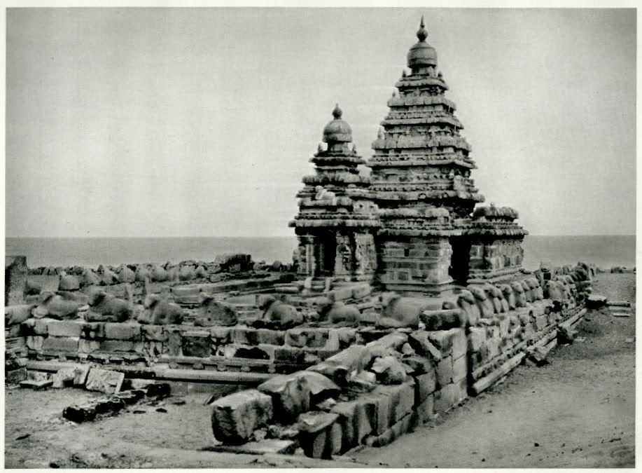

Mamallapuram, also known as Mahabalipuram, is a town in Chengalpattu district in the southeastern Indian state of Tamil Nadu, best known for the UNESCO World Heritage Site of 7th- and 8th-century Hindu Group of Monuments at Mahabalipuram. It is one of the famous tourist sites in India.The ancient name of the place is Thirukadalmallai.
Mamallapuram was one of two major port cities in the Pallava kingdom. The town was named after Pallava king Narasimhavarman I, who was also known as Mamalla. Along with economic prosperity, it became the site of a group of royal monuments, many carved out of the living rock. These are dated to the 7th and 8th centuries: rathas (temples in the form of chariots), mandapas (cave sanctuaries), the giant open-air rock relief the Descent of the Ganges, and the Shore Temple dedicated to Shiva.The contemporary town plan was established by the British Raj in 1827.
Etymology
The earliest mention of the city is found in the 1st century work called Periplus of the Erythraean Sea by an unknown Greek navigator. Ptolemy, the Greek geographer refers this place as Malange. Mahabalipuram is also known by other names such as Mamallapattana and Mamallapuram. The term Mamallapuram means the city of Mamalla, the other name of the famous Pallava Emperor Narasimhavarman I (630-670 CE) who built the famous temples in the city. Thirumangai Alvar, the famous Vaishnavite saint mentions this place as Thirukadalmallai, referring to the Sthalasayana Perumal Temple.Another name by which Mahabalipuram has been known to mariners, at least since Marco Polo's time is "Seven Pagodas" alluding to the Seven Pagodas of Mahabalipuram that stood on the shore, of which one, the Shore Temple, survives.

History
Neolithic burial urn, cairn circles and jars with burials dating to the 1st century BCE have been discovered near Mahabalipuram. The Sangam age poem Perumpāṇāṟṟuppadai relates the rule of King Thondaiman Ilam Thiraiyar at Kanchipuram of the Tondai Nadu port Nirppeyyaru which scholars identify with the present-day Mahabalipuram. Chinese coins and Roman coins of Theodosius I in the 4th century CE have been found at Mahabalipuram revealing the port as an active hub of global trade in the late classical period. Two Pallava coins bearing legends read as Srihari and Srinidhi have been found at Mahabalipuram.
Named after the White Elephant of Indra, this temple is a testimony to the grand temple architecture of the Cholan Empire. It is the last of the three great Cholan temples built by successive generations of kings starting from Rajaraja I. Airavateswara temple was built by Rajaraja II around 1150 AD. One of the striking features of this temple is Rajagambhira Thirumandapam - Royal Courtyard, with intricately carved pillars, long steps made of granite stones and elegant chariots drawn by horse - again hewn out of stone. You will see finer workmanship in this temple than the earlier temples. Darasuram is literally a stone's throw away from Kumbakonam.